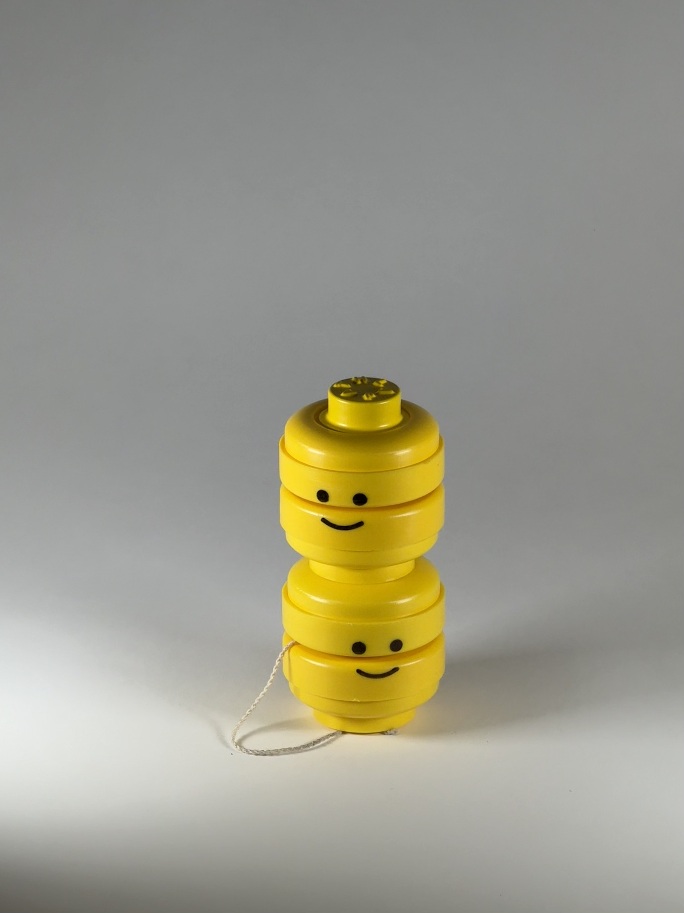
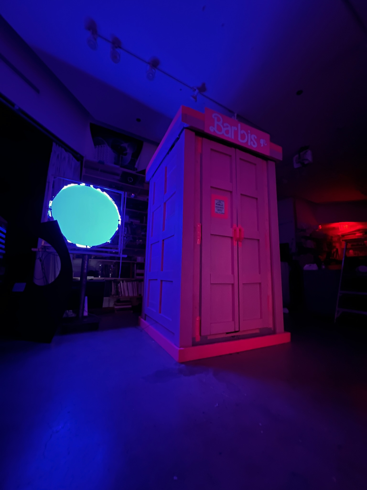

Hi! I'm Huda,
I'm a senior mechanical engineering student at MIT and I'm passionate about precision engineering and human-centered design. Welcome to my portfolio!
I'm a senior mechanical engineering student at MIT and I'm passionate about precision engineering and human-centered design. Welcome to my portfolio!



Minimally Invasive Opthalmic OCE System Non-destructive Benchtop OCE System
